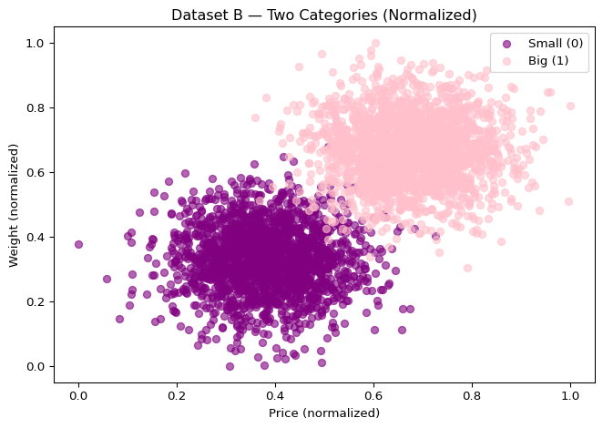
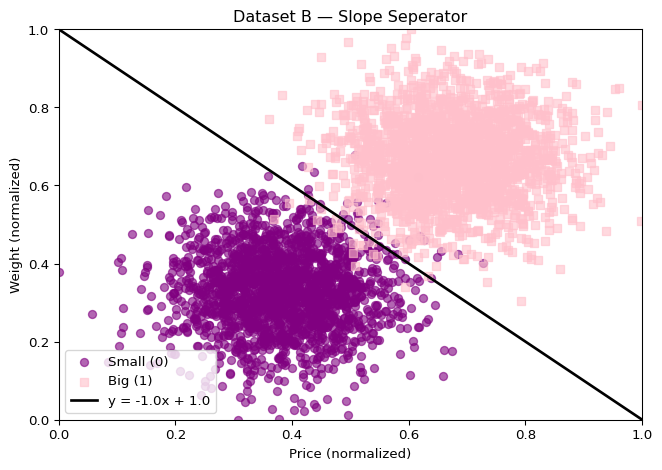

Team member 1: Isabella Darko / Normalized and plotted data set B
Team member 2: Hudson Finocchio / Normalized and plotted data set C
Team member 3: Name / contribution
Team member 4: Jacob Alexander / Created truth table and logic function
(Attach the signed certification page from the assignment PDF.)
Part 1 — Dataset Exploration and Linear Separation
Dataset A
Dataset B
Q1 — Normalize and visualize Dataset B
import pandas as pdimport matplotlib.pyplot as plt# 1. Load the dataset into a DataFramedfB = pd.read_csv("data/groupB.txt", header=None, names=["price","weight","type"])# 2. Normalize price and weight (min-max)dfB["price"] = (dfB["price"] - dfB["price"].min()) / (dfB["price"].max() - dfB["price"].min())dfB["weight"] = (dfB["weight"] - dfB["weight"].min()) / (dfB["weight"].max() - dfB["weight"].min())# 3. Show first 5 rows as an HTML tabledfB.head()
price
weight
type
0
0.579170
0.819156
1
1
0.674541
0.562297
1
2
0.735913
0.646515
1
3
0.895834
0.611533
1
4
0.773647
0.763013
1
# 4. Scatter plot of normalized data# Split the dataset into two groups based on the "type" column# type = 0 → small cars, type = 1 → big carssmall = dfB[dfB["type"]==0]big = dfB[dfB["type"]==1]# Start a new figureplt.figure()# Plot the small cars (purple dots)# x-axis = normalized price, y-axis = normalized weight# alpha=0.6 makes the dots slightly transparent so overlaps are visibleplt.scatter(small["price"], small["weight"], alpha=0.6, label="Small (0)", color="purple")# Plot the big cars (pink dots)plt.scatter(big["price"], big["weight"], alpha=0.6, label="Big (1)", color="pink")# Add axis labelsplt.xlabel("Price (normalized)")plt.ylabel("Weight (normalized)")# Add a plot titleplt.title("Dataset B — Two Categories (Normalized)")# Show the legend so we know which color = which typeplt.legend()# Adjust the layout so labels/titles don't overlapplt.tight_layout()# Save the figure to a PNG file (in the figs/ folder)plt.savefig("figs/B_scatter.png", dpi=150)# Display the figure in the Quarto-rendered HTML reportplt.show()

Q2 — Drawing my line on top of the scatter
import numpy as npimport matplotlib.pyplot as pltm, b =-1.0, 1.0# slope and intercept for the line# split the data into small and big againsmall = dfB[dfB["type"] ==0]big = dfB[dfB["type"] ==1]# x values from 0 to 1 since everything is normalizedx_vals = np.linspace(0, 1, 500)y_vals = m * x_vals + bplt.figure()# scatter plot of both groups (purple circles vs pink squares)plt.scatter(small["price"], small["weight"], alpha=0.6, label="Small (0)", color="purple", marker="o")plt.scatter(big["price"], big["weight"], alpha=0.6, label="Big (1)", color="pink", marker="s")# plot the line across the graphplt.plot(x_vals, y_vals, color="black", linewidth=2, label=f"y = {m}x + {b}")# keep the axes locked to the normalized rangeplt.xlim(0, 1)plt.ylim(0, 1)plt.xlabel("Price (normalized)")plt.ylabel("Weight (normalized)")plt.title("Dataset B — Slope Seperator")plt.legend()plt.tight_layout()plt.savefig("figs/B_separator.png", dpi=150)plt.show()

Q3 — Turning line into the neuron inequality
# my line is: y = m*x + bm, b =-1.0, 1.0# flip it into neuron form: w1*x1 + w2*x2 >= thetaw1 =-m # weight for pricew2 =1.0# weight for weighttheta = b # thresholdprint("my weights and threshold:")print("w1 =", w1)print("w2 =", w2)print("theta =", theta)# now use these to classify points in dfBnet = w1*dfB["price"] + w2*dfB["weight"]pred = (net >= theta).astype(int)# just show a few rows to checkdfB.assign(pred=pred)[["price","weight","type","pred"]].head()
my weights and threshold:
w1 = 1.0
w2 = 1.0
theta = 1.0